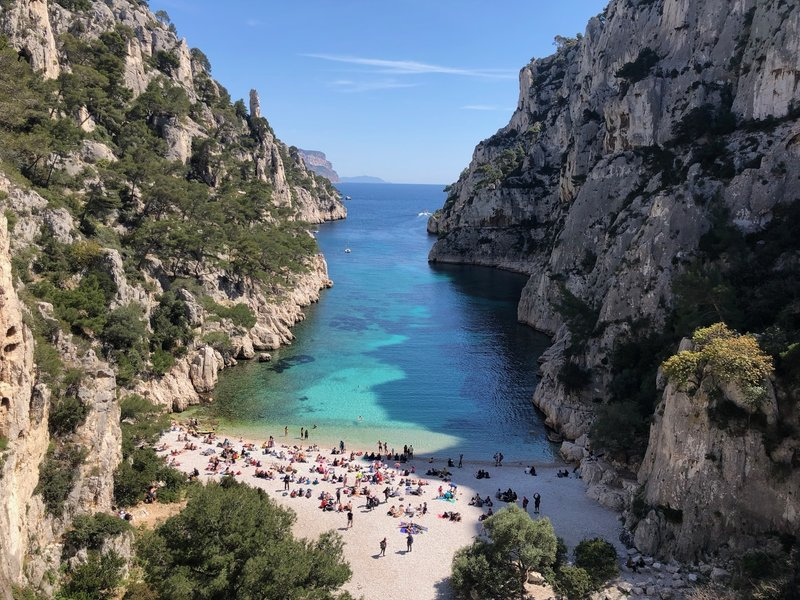
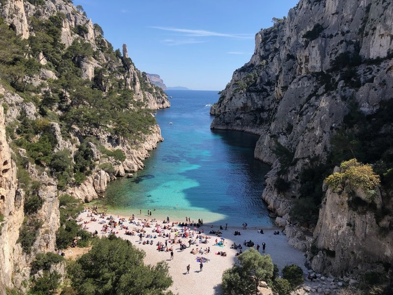
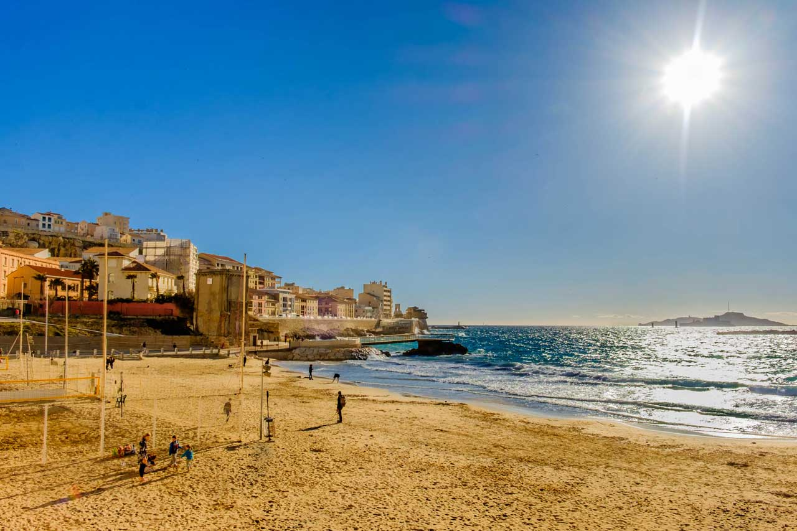
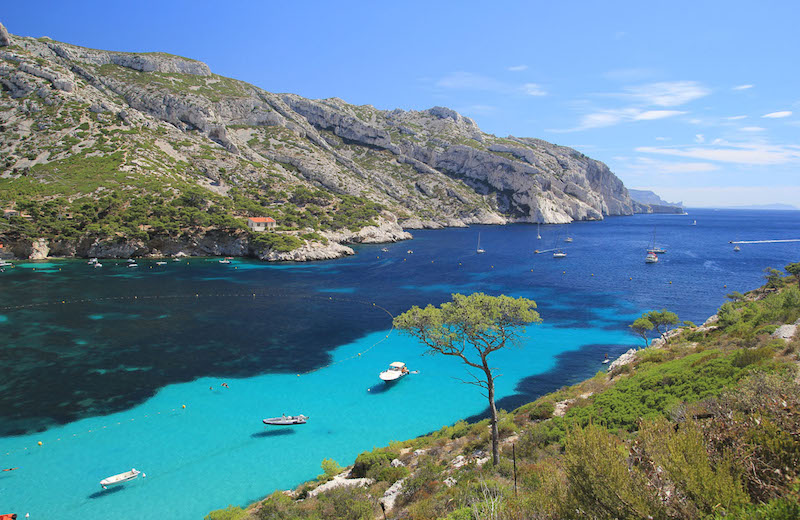
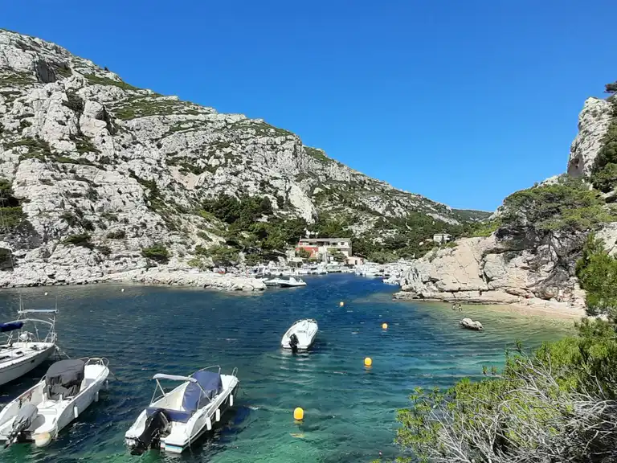
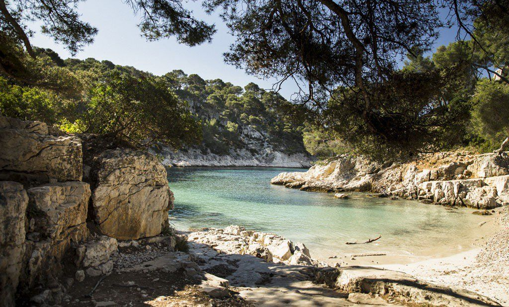
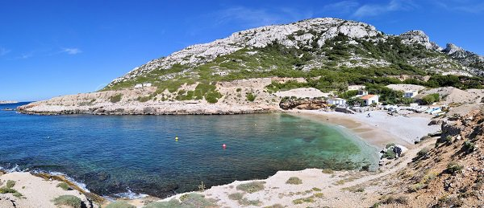
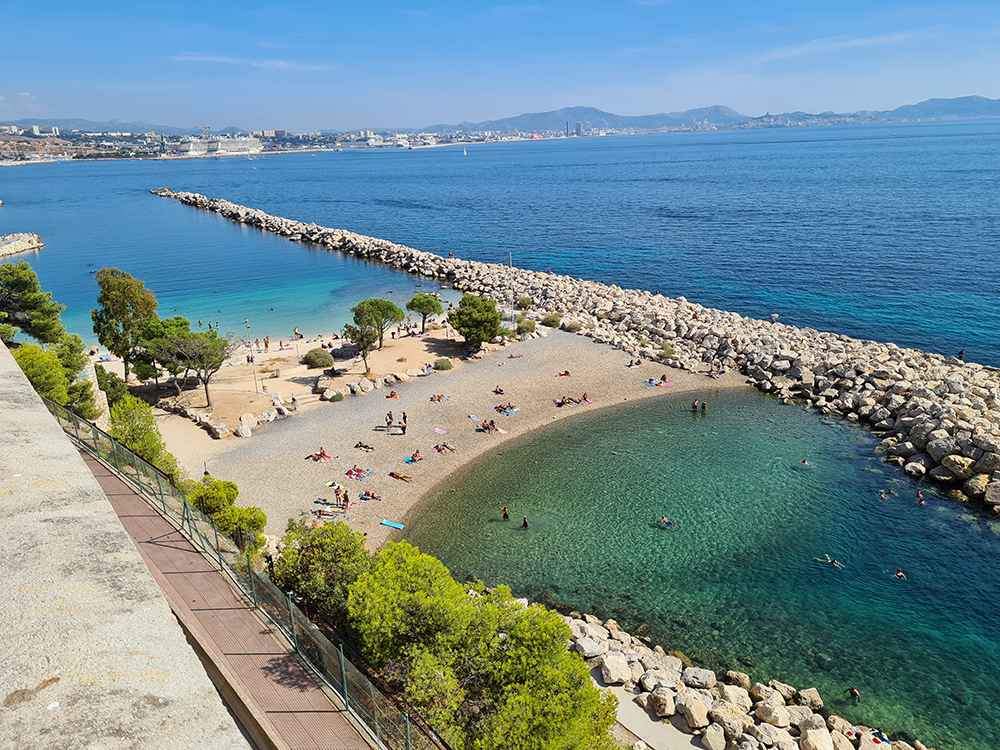

Les belles plages de Marseille
Comment évoquer Marseille sans parler de la mer. La grande bleue chantée par le Massilia Sound System est au centre de la vie marseillaise. Alors oui, à Marseille, on aime ces journées à se dorer la pilule au soleil avant de plonger dans une eau bleue comme le ciel méditerranéen. Marseille compte près de 21 plages qui bordent son littoral, naturelles ou artificielles, de sable ou de galets, de Corbières au parc national des Calanques.
 


La plage du Prophète

Une petite plage à Marseille qui est très populaire, sur la Corniche Kennedy. Elle est jolie, très conviviale, aménagée avec poste de secours, douches, cabines, sans oublier le terrain de volley et la vue sur les îles du Frioul au loin. On a pied assez loin, ce qui est parfait pour apprendre à nager aux enfants. Aussi, la plage est surveillée (période estivale), protégée des vagues par une digue et à l’abri du Mistral. Cette plage de Marseille est parfaite pour les familles avec enfants. L’avantage de cette plage est qu’elle est proche du centre-ville. Il est possible de prendre le bus, du Vieux Port ligne 83, et descendre à l’arrêt « Prophète ».
La plage des Catalans
La plage des Catalans est plutôt petite, mais elle est agréable avec son sable fin et elle offre une jolie vue sur les îles du Frioul. Les vacanciers·ières apprécieront les terrains de beach-volley. Aussi, elle est assez facile d’accès, car proche du centre-ville. C’est d’ailleurs la plus proche du Vieux Port. Elle est également proche des hôtels, restaurants et commerces. Par ailleurs, elle est surveillée en été et très fréquentée durant cette période. En saison creuse, elle est parfaite pour se ressourcer, sans trop s’éloigner du centre-ville. On peut y accéder en bus, arrêt « Catalans », ou à 15 minutes à pied du Vieux Port, par le boulevard Charles Livon.
Les plages du Frioul
Situées face à la Cité Phocéenne, les îles du Frioul ébouissent par la beauté de leurs calanques, criques et petites plages de sable. Elles charment les visiteurs avec leur côté sauvage et naturel. L’archipel du Frioul est accessible au départ de Marseille, avec la navette au départ du Vieux Port. Sur l’île Ratonneau, vous apprécierez la sublime plage-calanque Saint Estève. Profitez-en pour visiter l’île et aller voir l’hôpital Caroline, datant des années 1820. Il était utilisé pour placer en quarantaine les malades durant les épidémies comme la peste ou la fièvre jaune. L’île de Pomègues est la plus grande de l’archipel, reliée à l’île Ratonneau par une digue. Pour une baignade dans un cadre idyllique, posez votre serviette à la plage-calanque de la Crine.
La plage calanque du Sormiou
Une des plus belles plages à Marseille, elle est très appréciée des amateurs·rices de plongée sous-marine. C’est une plage paradisiaque et incontournable à Marseille, alliant sable, rochers, eau turquoise… Il s’agit donc d’une petite plage au charme fou, parfaite pour une journée détente en bord de mer. Durant votre escapade, vous pourrez découvrir le petit port de Sormiou et les cabanons proches du port, sans oublier le chemin du Cap Sormiou et Cap Redon. Vous pouvez aller jusqu’à la crête de Morgiou pour une vue panoramique grandiose ou à la grotte préhistorique Cosquer.
La plage de la calanque de Morgiou
Très abritée du vent, la petite plage de sable de Morgiou est nichée dans l’une des calanques marseillaises les plus authentiques de la route qui relie Marseille et Cassis. À flanc de falaise, elle donne l’impression d’être à la sortie d’une petite grotte naturelle. Son port abrite encore des pêcheurs professionnels et quelques cabanons habités à l’année.
La plage calanque Port-Pin
Port-Pin est une des plus belles calanques de Marseille. Elle se trouve dans le 9° arrondissement, quartier Vaufrèges. Son nom provient des nombreux pins d’Alep, qui donnent un côté très boisé au site. Avec son côté sauvage et préservé, elle est parfaite pour se changer les idées. La plage a beaucoup de charme et est composée de sable et galets, contrastant avec l’eau turquoise. Elle est idyllique et ne laisse personne indifférent. Aussi, si on souhaite y passer plus de temps et profiter du cadre, il est possible de randonner dans les rochers et louer des canoës à proximité, pour longer le rivage et en admirer la beauté.
La plage calanque d’En-Vau
La plage de la calanque d’En-Vau a la réputation d’être une des plus belles plages du Parc National des Calanques. De hautes falaises surplombent la plage de galets et les eaux cristallines et turquoises. Cette plage paradisiaque fait partie des incontournables de Marseille. La plage est accessible à pied, bateau ou en canoë. Une fois sur place, on peut grimper sur les falaises pour admirer la vue plongeante, par exemple par le sentier Castelviel. Pour accéder à cette plage de Marseille, il faut marcher environ une heure, mais ça en vaut la peine. Pour profiter du calme et de l’aspect sauvage, la saison creuse est idéale.
La plage calanque Marseilleveyre
La plage de la calanque Marseilleveyre est une très belle plage de sable et galets, dans un cadre admirable. La calanque est assez ensoleillée et très aride. En ce qui concerne la végétation, elle est de type méditerranéen, en harmonie avec le site, avec notamment des plantes grasses, aloès ou encore des figuiers de barbarie. Une journée ou seulement quelques heures sur la plage de Marseilleveyre seront un pur moment de bonheur, face à l’eau turquoise de la Grande Bleue. Par ailleurs, on peut parcourir les sentiers balisés de ce site protégé, pour admirer le panorama et la vue sur cette très belle plage de Marseille. On peut aussi admirer le charme des petits cabanons en hauteur, face à la mer ou poursuivre la balade vers les calanques voisines de Mounine et Queyrons.
La plage de la Pointe Rouge

Cette plage est proche de la marina de Pointe Rouge et du parc balnéaire du Prado. Très populaire en été, c’est la plus grande plage de sable de Marseille, agréable et abritée du vent. C’est aussi l’une des plus belles plages de Marseille, parfaite pour profiter du soleil méditerranéen. Elle est surveillée et donc sûre pour les enfants. De plus, des activités sont proposées à proximité, comme le kayak, la voile ou la plongée. Cette plage est idéale pour les familles avec les enfants. En bordure se trouvent de nombreux restaurants, bars, pubs qui assurent le ravitaillement et l’ambiance.
Les plages du Prado

La plage du Prado est la plus septentrionale des plages artificielles le long des promenades qui s’étendent au sud du cœur de Marseille. Elle est facile d’accès grâce au bus direct qui relie le port au quartier des plages. Le trajet dure environ 40 minutes au total et les bus sont fréquents pendant les mois d’été. Large et spacieuse, la plage se remplit tout de même rapidement de baigneurs et de joueurs de volley-ball dès qu’il fait chaud. Elle est protégée par des avancées faites de gros rochers, grâce à quoi les vagues restent toujours petites, ce qui permet de nager facilement. À l’heure du déjeuner, le Parc balnéaire du Prado qui se trouve juste derrière est idéal pour un pique-nique sur l’herbe.
Plages de Corbière - L'Estaque
Dans le quartier mythique de l’Estaque se trouvent les seules plages des quartiers Nord. Un ensemble de trois plages qui se suivent après l’Estaque. L’avantage de ces plages est qu’elles sont propres même en été, faciles d’accès, surveillées, suffisamment grandes et avec une vue magnifique sur tout Marseille, précédées de jardins paysagers avec une base nautique municipale. Les plages sont peu profondes, en partie ombragées, elles sont de sable fin et de galets, équipées de sanitaires, douches et d’une consigne de vêtements gratuite. Ce sont les plages parfaites pour les familles. A proximité l’on trouve une buvette, un terrain de jeux (volley…). Des espaces sont également aménagés pour pique-niquer et des animations sportives et créatives sont également proposées. Vous pourrez y admirer un très beau panorama de la côte marseillaise. Entre deux baignades, vous pourrez aller vous promener dans le village de l’Estaque, source d’inspiration de plusieurs artistes et peintres, Cézanne, Dufy, Renoir… et également cadre du film «Marius et Jeannette» de Robert Guédiguian. Une vraie authenticité provençale et marseillaise. Et on le sent également dans l’assiette avec les fameux «Chichis Frégis» ou les panisses à déguster après une après-midi de farniente.